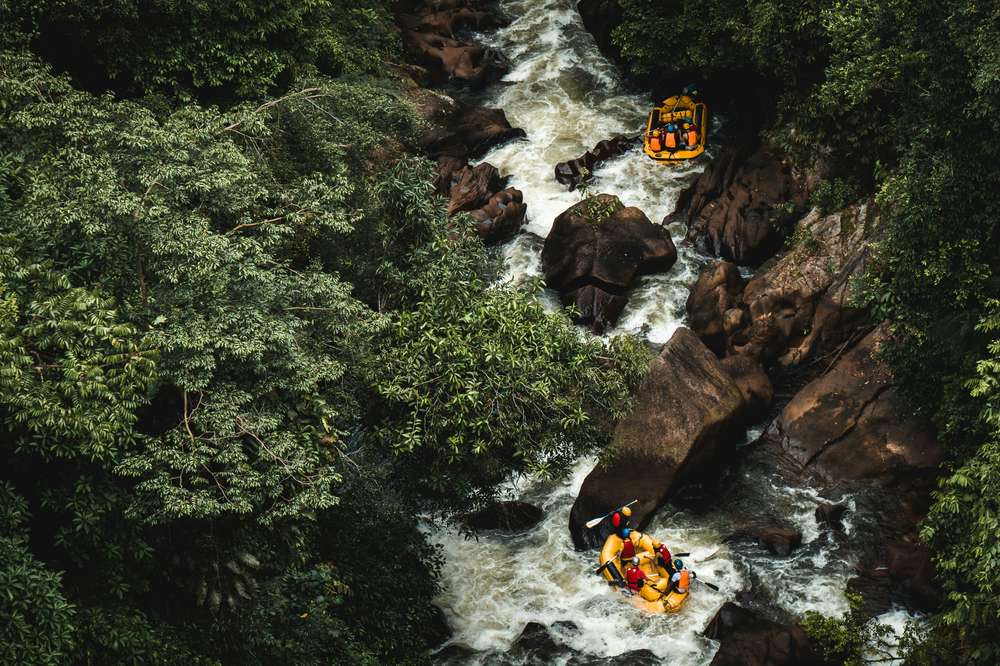
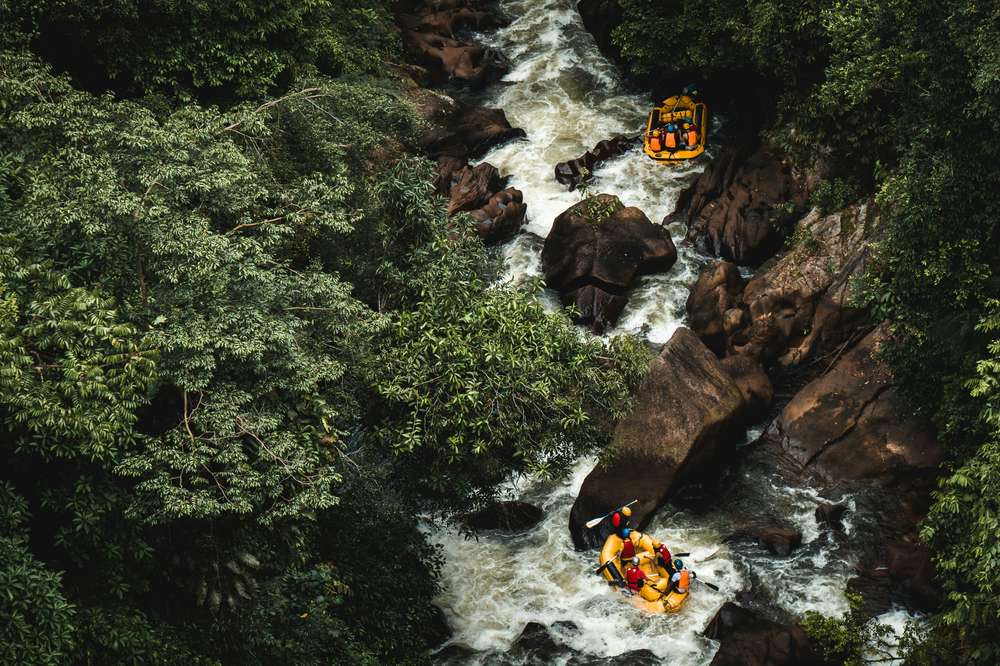

Intrepid Club

Mission, creed, motto. Intrepid Club is the best option to learn water rafting in a famimly firendly environment.
History
Intrepid Club guarantees an unforgettable adventure. We are passionate about rafting and we have been sharing this experience for 30 years. Intrepid Club offers access to the best whitewater rivers in Utah and Idaho. Intrepid Club is recognized for providing high-quality gear and a professional team that will assure you with comfort, safety, and fun.
Whether you are experienced or beginner you will find the service that best meets your needs. Our personalized trips allow you to enjoy the whole experience; learn and improve rafting techniques, admire the beauty of nature, feel the rush, and connect with people that you love.
Intrepid Club´s website will provide detailed information about the areas where it operates, gear, and trip packages. It will provide 24-hour live chat assistance and contact information. People will be able to purchase available merch on our website.
Adventure Awaits You!

 
